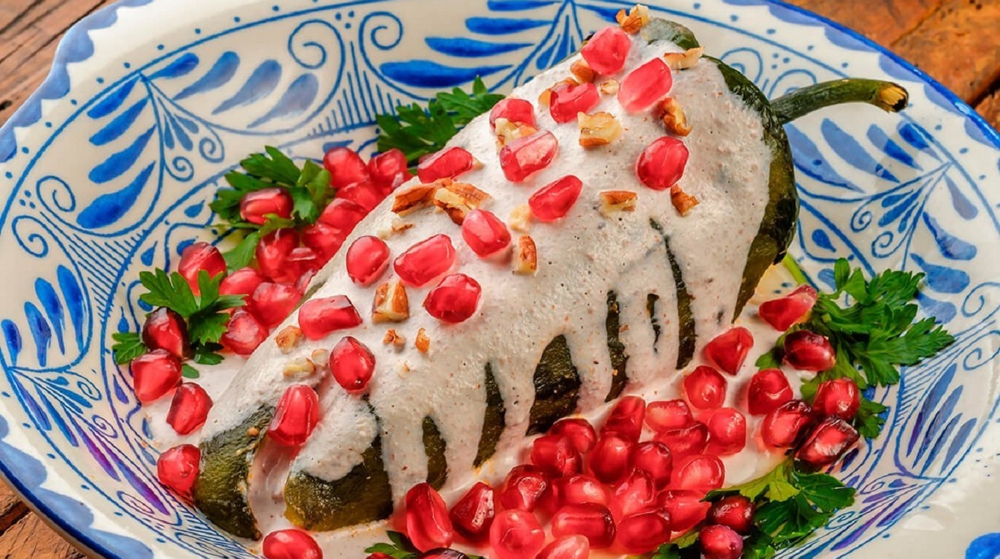

Chiles en Nogada

Ingredientes:
- 6 chiles poblanos
- 1/2 kilo de carne molida de res
- 1/2 cebolla finamente picada
- 2 dientes de ajo finamente picados
- 2 jitomates picados
- 1/4 taza de pasitas
- 1/4 taza de almendras picadas
- 1/4 taza de piñones
- 1/2 plátano macho picado
- 1 manzana picada
- 1 pera picada
- 1 durazno picado
- Sal y pimienta al gusto
- 1 pizca de canela molida
- 1 pizca de clavos de olor molidos
- 1 cucharadita de azúcar
- 1 cucharada de vinagre de manzana
- 1/2 taza de nueces de castilla picadas
- 1/2 taza de leche
- 1/2 taza de queso de cabra
- 1/2 taza de crema de leche
- 1/4 taza de jerez
Instrucciones:
- Lava los chiles y ásalos en un comal o sartén caliente hasta que estén completamente dorados.
- Colócalos en una bolsa de plástico para que suden y sea más fácil retirarles la piel.
- Pela los chiles con cuidado y haz una abertura en uno de los costados para retirar las semillas y venas.
- En una sartén grande, fríe la cebolla y el ajo hasta que estén transparentes.
- Agrega la carne molida y cocina hasta que esté dorada.
- Añade el jitomate, las pasitas, las almendras, los piñones, el plátano macho, las manzanas, la pera y el durazno.
- Sazona con sal, pimienta, canela, clavos de olor, azúcar y vinagre.
- Cocina a fuego bajo hasta que la fruta esté suave.
- Rellena los chiles con la mezcla de carne y frutas.
- Para la nogada, licúa las nueces con la leche, el queso de cabra, la crema y el jerez.
- Cubre los chiles rellenos con la nogada.
- Decora con granada y perejil picado.
- Rellena los chiles con la mezcla de carne y frutas.
- Para la salsa de nuez, muele las nueces con la leche evaporada y la crema hasta obtener una mezcla suave y homogénea.
- En una sartén pequeña, derrite la mantequilla y fríe la mezcla de nueces hasta que espese un poco.
- Para armar el plato, coloca los chiles rellenos en un platón y baña con la salsa de nuez. Decora con granada y perejil picado.
- Sirve los chiles en nogada fríos y disfruta de su delicioso sabor.